Places to visit in and around Dapoli
Ten places worth the drive, starting with the beach nearest the project, and a two-night route that fits them together.
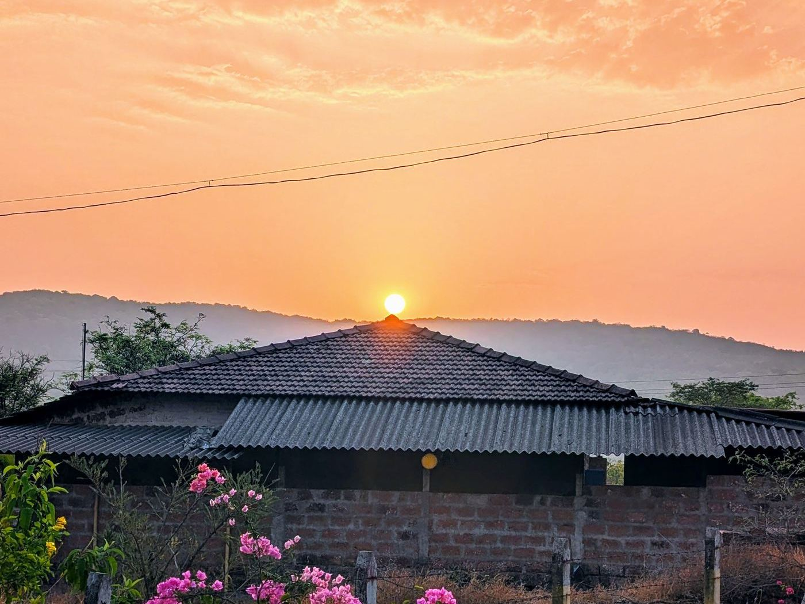
Kolthare beach
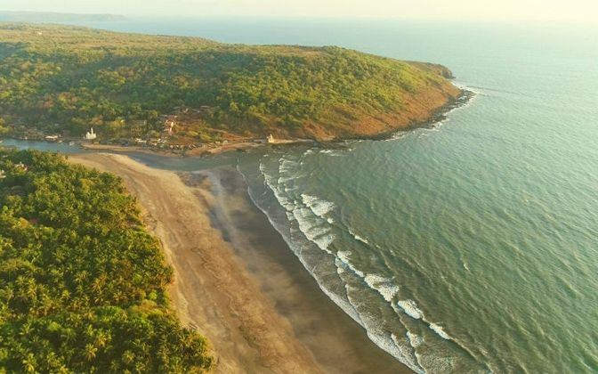
The closest beach to the project, about 9 km away. Backed by casuarina and coconut with a temple at one end, and quiet even on a Sunday.
Murud beach
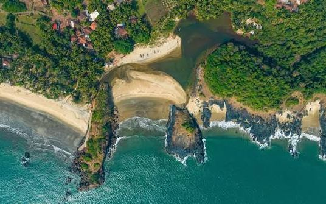
The longest and best known of the Dapoli beaches, a broad flat stretch of sand with the widest choice of food nearby.
Karde beach
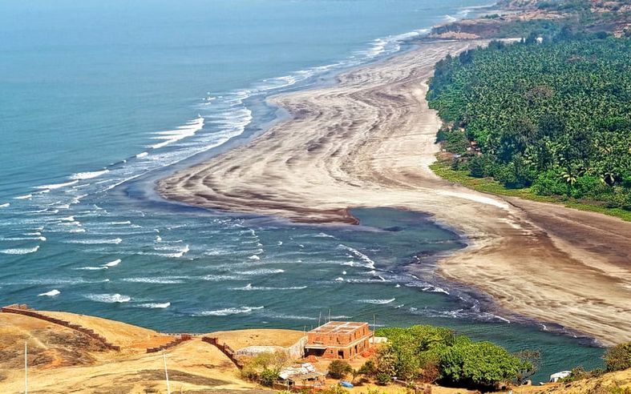
Next to Murud, and the base for dolphin boat trips and watersports. Go out early for the best chance of seeing dolphins.
Ladghar beach
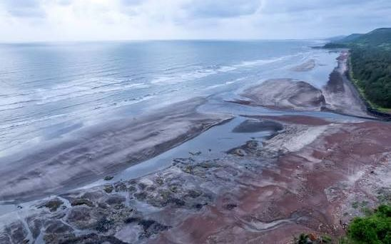
Known locally as Tamas Teerth for the reddish tint the laterite gives the sand. Small, dramatic, and best at sunset.
Anjarle and Kadyavarcha Ganpati
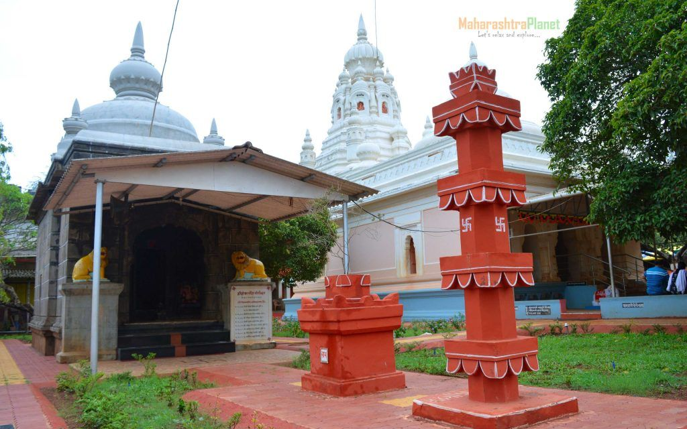
A clean crescent beach with a hilltop Ganesh temple looking out over the creek. The view from the temple is worth the climb.
Harnai fish auction
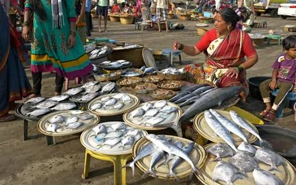
Every evening the boats come in and the catch is auctioned right on the sand. Loud, fast and completely unstaged.
Suvarnadurg and the Harnai forts
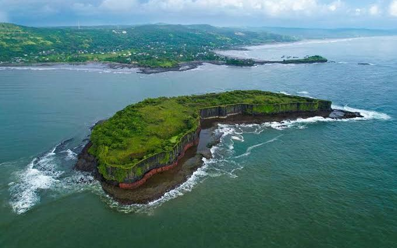
A sea fort on an island off Harnai with three land forts on the shore, reached by local boat in calm season.
Unhavare hot springs
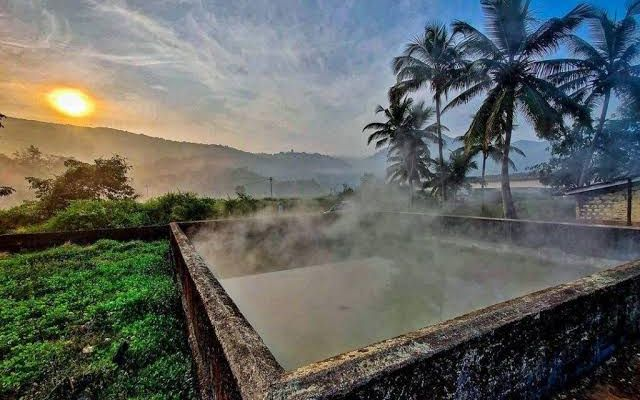
Natural sulphur springs with bathing tanks, about an hour from Dapoli town.
Panhalekaji caves
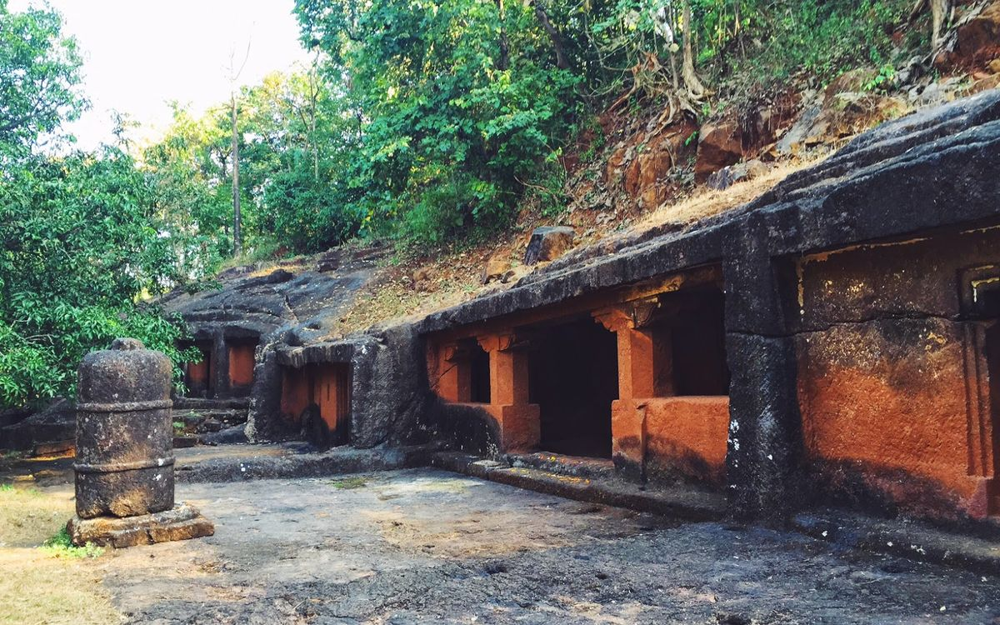
A rock-cut cave complex with Buddhist and later Shaiva carving, in a quiet river valley away from the coast.
Burondi Parshuram statue
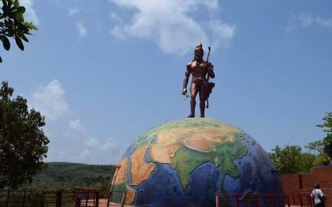
A hilltop statue with a wide panorama over the sea, an easy stop between beaches.
A two-night route that works
Day one afternoon: arrive, settle, Ladghar for sunset. Day two: early dolphin boat from Karde, breakfast, Anjarle temple and beach, then the Harnai auction at dusk. Day three: Unhavare or Panhalekaji on the way out, depending which way you drive home.